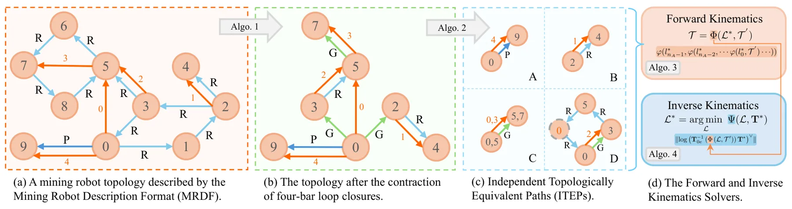
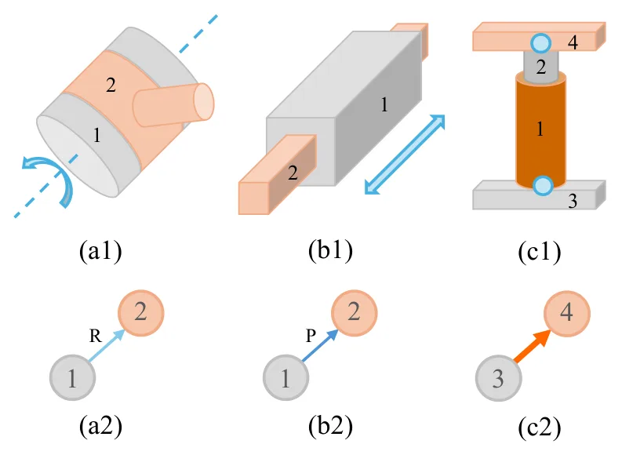
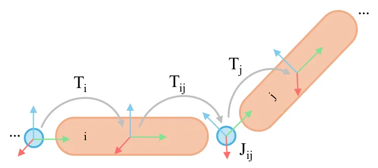
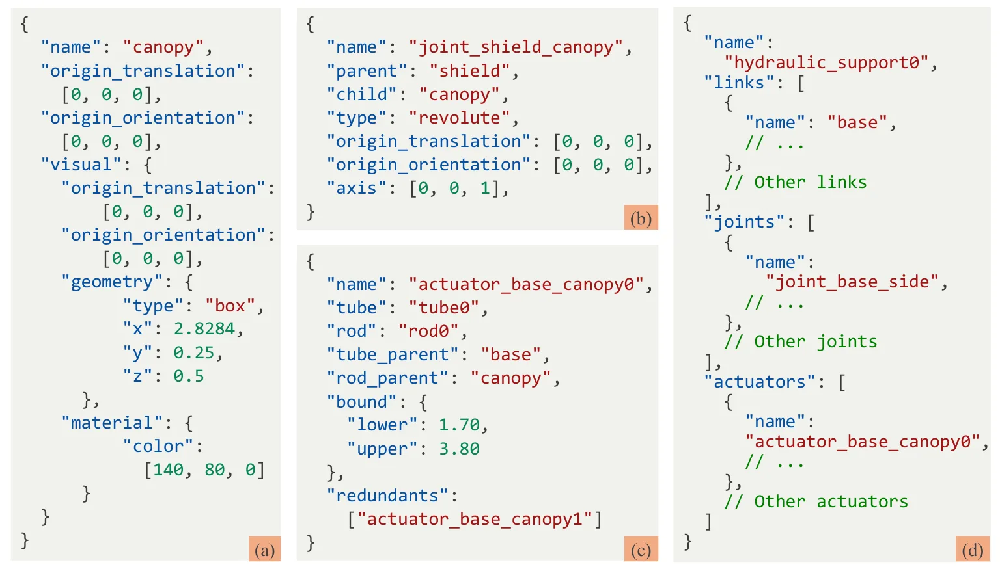

MineRobot：面向地下矿山机器人的执行器中心运动学建模与求解框架MineRobot: An Actuator-Centered Kinematic Modeling and Solving Framework for Underground Mining Robots
不是 SLAM，但与地下机器人数字孪生、仿真和规划相关；可为定位建图系统提供更可靠的机构/几何模型。
一句话工作总结
为地下矿山机器人闭链执行器机构提供可复用 FK/IK 和描述格式，服务规划、训练和数字孪生。
摘要
MineRobot 面向地下矿山机器人中的线性执行器驱动闭链机构和四杆结构，提出执行器中心的建模与 FK/IK 求解框架。作者定义 Mining Robot Description Format（MRDF），用原生语义描述 actuator 和 loop closure；再把平面四杆子结构收缩为 generalized joints，并为每个 actuator 提取 Independent Topologically Equivalent Path（ITEP），分成四种 canonical types。FK 由 per-type solvers 顺序组合，IK 则建模为带界执行器长度优化，并用 Gauss-Seidel-style update 求解。实验在代表性地下矿山机器人上展示实时 FK 和测试范围内鲁棒 IK 收敛。
Underground mining robots are increasingly modeled for planning, operator training, and digital-twin workflows, where reliable actuator-level kinematics is needed to reduce hazardous in situ trials. Unlike typical open-chain industrial manipulators, representative mining machines are often linear-actuator-driven closed-chain mechanisms with planar four-bar linkages, making reusable kinematic modeling and real-time FK/IK solving challenging. We present \textit{\hl{MineRobot}}, an actuator-centered framework for modeling and solving the kinematics of this representative mechanism class. MineRobot introduces the Mining Robot Description Format (MRDF), a domain-specific representation that parameterizes mining-robot kinematics with native semantics for actuators and loop closures. It then contracts planar four-bar substructures into generalized joints and extracts, for each actuator, an Independent Topologically Equivalent Path (ITEP) classified into four canonical types. Based on this decomposition, per-type solvers are composed into a sequential forward-kinematics (FK) pipeline, while inverse kinematics (IK) is formulated as a bound-constrained actuator-length optimization solved by a Gauss--Seidel-style update scheme. By converting coupled closed-chain kinematics into small topology-aware solves, MineRobot reduces robot-specific hand derivations and supports efficient repeated FK/IK computation without treating each query as a full coupled constraint-solving problem. Experiments on representative underground mining robots demonstrate real-time FK performance and robust IK convergence within the tested operating ranges, supporting the use of MineRobot as an actuator-centered kinematic layer for planning, training, and digital-twin workflows.
中文解读摘录
- 为什么看：不是 SLAM，但与地下矿山机器人 digital twin、规划和操作员训练有关。地下矿山设备常是线性执行器驱动的闭链四杆机构，通用 FK/IK 建模困难。
- 方法要点：提出 Mining Robot Description Format（MRDF），用 actuator 和 loop closure 语义描述矿山机器人；把平面四杆结构收缩成 generalized joints，为每个 actuator 提取 Independent Topologically Equivalent Path（ITEP），分类成四种 canonical types；FK 顺序组合 per-type solvers，IK 则用 bound-constrained actuator-length optimization 和 Gauss-Seidel-style update。
- 结果信号：在代表性地下矿山机器人上展示实时 FK 性能和测试范围内的 IK 鲁棒收敛。
- 跟踪建议：如果做地下/矿山机器人数字孪生、仿真和规划，可关注 MRDF 与现有 URDF/SDF/ROS2 pipeline 的兼容性；与定位建图结合点在于可提供更可靠的几何/执行器模型。
- 链接：abs · PDF
图表/页面预览

{kind=link}

{kind=link}

{kind=link}

{kind=link}
